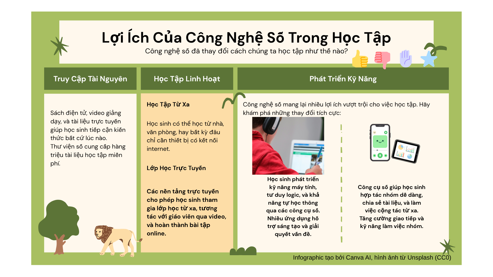

Infographic và video: Nhiệm vụ 2.2
Khám phá nội dung qua infographic và xem video nhúng bên dưới để hỗ trợ thực hiện bài tập Nhiệm vụ 2.2.

Khám phá nội dung qua infographic và xem video nhúng bên dưới để hỗ trợ thực hiện bài tập Nhiệm vụ 2.2.
